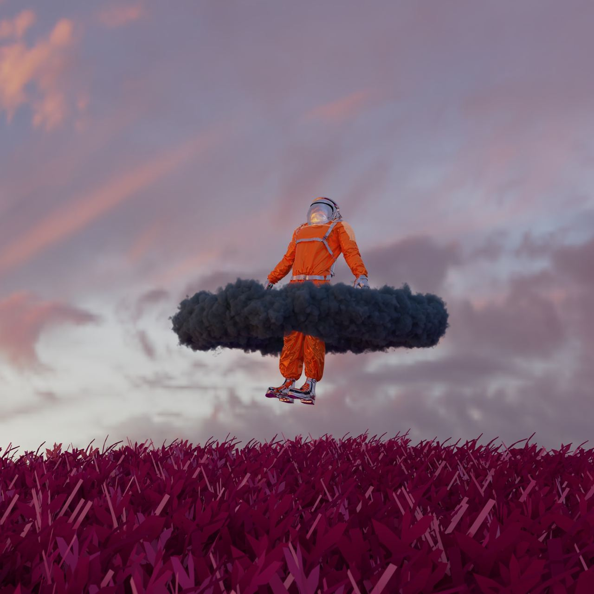
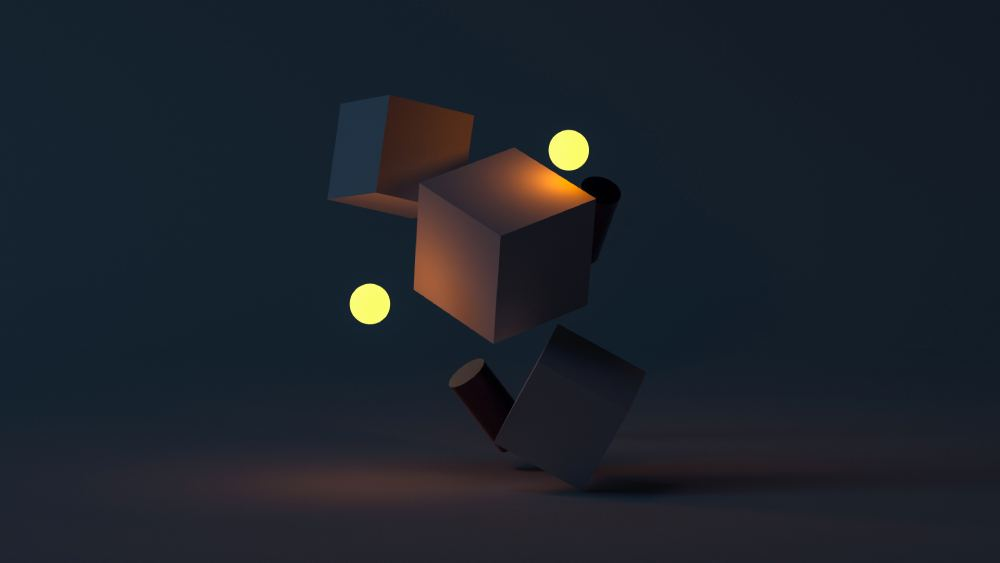

Inspired by visionary creators, this artwork transports us to a surreal realm.☁ An astronaut hovers above a vibrant landscape, embraced by a swirling cloud. This piece challenges us to reflect on our cosmic journey and the unknown paths ahead. The artist blends elements of science fiction and fantasy, urging us to question our place in the universe.🪐 Click here to explore more cosmic masterpieces.
What tales does this lone chair tell?🪑 Set against a backdrop of endless sand and a hovering cloud, it evokes solitude and introspection. The artist delves into the subconscious, questioning who sat here and what stories the cloud holds. This piece invites you to explore the intersection of reality and imagination, where everyday objects become vessels of meaning.Discover more thought-provoking pieces here.
Step into a universe where shapes defy logic and glow with an inner light.🔲 The artist crafts a delicate dance of cubes and spheres, exploring the tension between chaos and harmony. Each element tells a story, inviting you to ponder the mysteries of existence.Dive deeper into their abstract art here.

A mesmerizing facade of mirrored angles and lines captures the essence of modern design.🏢 The building's surfaces reflect the world around it, creating a kaleidoscope of patterns. This piece challenges perceptions of space and form, urging you to see architecture as art. The artist's vision transforms a static structure into a dynamic interplay of light and shadow, inviting you to explore the boundaries of creativity.Dive deeper into their abstract art here.
A dance of light and color unfolds as sunlight filters through textured glass.🍷 The artist captures the interplay of transparency and opacity, inviting you to explore the beauty of everyday objects. This artwork transforms simple glassware into a symphony of colors and shapes, encouraging you to see the extraordinary in the ordinary. Discover more in this luminous collection here.